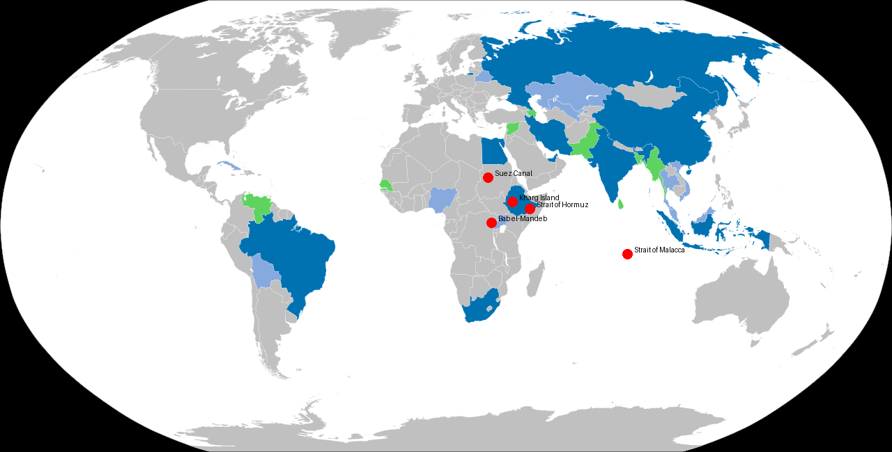

Executive Summary
The modern world runs on energy flows that move through a small number of narrow geographic corridors. These chokepoints are not merely shipping routes. They are pressure valves for the global economy and leverage points for states willing to exploit them.
Recent developments across multiple regions suggest that competition over these corridors is intensifying. The pattern becomes clearer when the map of emerging geopolitical blocs is placed alongside the map of oil transit routes.
That combined view reveals a strategic reality many analysts still treat as separate stories: energy production, transit control, and political alignment are converging.
Approximately one-fifth of the world’s oil consumption still passes through the Strait of Hormuz, and a substantial share of Iran’s exports are loaded through infrastructure tied to Kharg Island. That fact alone explains why pressure around the Gulf matters far beyond the region.
Control of energy routes may become one of the decisive factors shaping the next phase of global power competition.
Charlemagne Strategic Map Room
Maps often reveal what headlines conceal.

1 — Kharg Island
2 — Strait of Hormuz
3 — Suez Canal
4 — Bab el-Mandeb
5 — Strait of Malacca
The pressure points are not random. They cluster where producers, transit corridors, and emerging power blocs intersect.
Strategic Chokepoints Under Watch
Several corridors dominate the movement of global oil and energy shipping, but four deserve particular attention because they combine physical vulnerability with outsized strategic effect.
Strait of Hormuz
The Strait of Hormuz remains the world’s most critical oil chokepoint. It links the Persian Gulf to the Arabian Sea and supports the transit of some of the largest crude carriers on earth. Any sustained disruption here quickly becomes a global problem rather than a regional one.
Bab el-Mandeb
Connecting the Red Sea to the Gulf of Aden, Bab el-Mandeb links Persian Gulf energy to Europe through the Suez Canal. Pressure here reverberates immediately through insurance costs, shipping schedules, and the viability of Red Sea routes.
Suez Canal
Suez remains one of the world’s great strategic shortcuts. Disruption forces tankers and container ships to reroute around Africa, imposing time, cost, and uncertainty on nearly every trade system dependent on punctual flow.
Strait of Malacca
The Strait of Malacca is one of the busiest shipping lanes in the world and a vital artery for energy deliveries to East Asia. It matters because demand and transit pressure meet there at scale.
Viewed together, these waterways form a chain of vulnerability stretching from the Persian Gulf to East Asia. Pressure at any single point can be absorbed for a time. Pressure across several at once begins to reshape state behavior.
Situation Assessment
Each of these locations sits along routes connecting major exporters with major industrial economies. Their importance is amplified by the fact that the global system still depends on reliable, affordable movement across them.
These chokepoints have historically remained open because the global economy depended upon stability. But the international environment is changing. Shipping lanes are increasingly discussed in military, financial, and coercive terms rather than merely commercial ones.
Several developments deserve continued attention:
- increased military signaling around the Strait of Hormuz
- persistent instability affecting Red Sea shipping lanes
- rising geopolitical tension across the Indo-Pacific
- expanding naval capabilities among regional powers
None of these developments alone guarantees an immediate crisis. Together, however, they indicate that the security of energy corridors can no longer be taken for granted.
Strategic Implications
When the BRICS+ alignment map is placed alongside global energy corridors, a deeper strategic relationship becomes visible.
Many of the countries involved in the emerging economic alignment are either major energy producers, critical transit states, or major energy consumers. That creates a triangular system involving supply, transportation, and settlement mechanisms.
Control over any one of those elements can shift leverage. Control over all three would reshape the international system.
This is why competition surrounding energy chokepoints is unlikely to diminish in the coming years. The issue is not only oil. It is the political authority that accumulates around essential flows.
Prophetic Watch Assessment
Biblical prophecy frequently describes periods of heightened instability, economic pressure, and concentrated power. Responsible observers should resist premature conclusions. Not every crisis carries prophetic significance.
Yet when global systems of energy, trade, and authority begin tightening at the same time, students of both history and prophecy take closer notice. Patterns sometimes emerge slowly before becoming unmistakable.
Some readers connect this pressure with language in Jeremiah 49 concerning Elam, a region historically associated with southwestern Iran. Whether present developments ultimately align with that framework remains uncertain, but the overlap between geography, pressure, and vulnerability is one reason the passage continues to draw attention.
Charlemagne’s Conclusion
Maps often reveal what headlines conceal.
When viewed individually, developments across the Persian Gulf, the Red Sea, and the Indo-Pacific appear unrelated. But when the world’s energy chokepoints are plotted alongside the emerging alignment of nations, the pattern begins to clarify.
Power is not shifting randomly. It is moving along the routes where energy flows.
Which means the most consequential conflicts of the coming decade may not occur on conventional battlefields. They may unfold along the narrow waterways through which the world’s oil quietly travels.
— Charlemagne